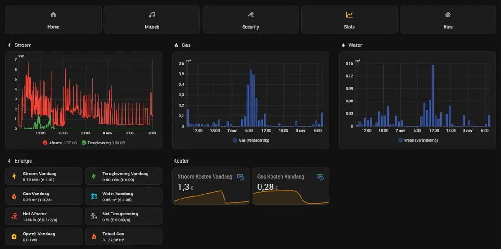
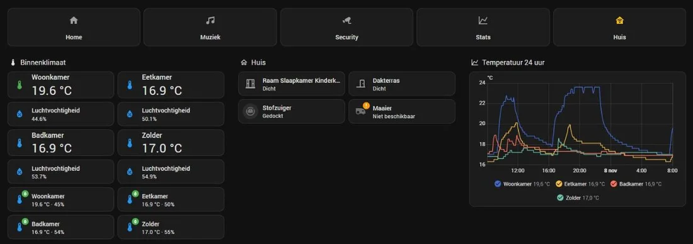
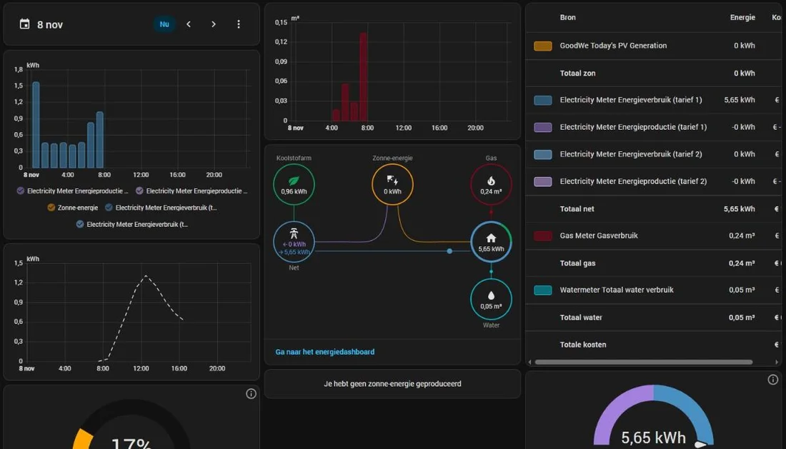

Slimme deurbel
Bij aanbellen springt de keukentablet aan met groot livebeeld van de voordeur, plus een foto via Telegram. In de stand Nachtdienst blijft het stil.
In gebruikReolink · Fully Kiosk · Telegram
Het hele huis op één systeem: verlichting, klimaat, beveiliging, energie en huishouden. Alles draait lokaal in huis en is voor iedereen in het gezin te bedienen vanaf de tablet in de keuken.
De keukentablet en het energiedashboard




Wat ik zelf gebouwd heb
Bij aanbellen springt de keukentablet aan met groot livebeeld van de voordeur, plus een foto via Telegram. In de stand Nachtdienst blijft het stil.
De boiler warmt overdag alleen op met stroom die de zonnepanelen over hebben. Om 22:00 springt hij alsnog aan als dat nodig is.
Virtuele thuisbatterijen draaien mee op het echte verbruik, zodat ik vooraf zie wat een batterij oplevert na het einde van het salderen.
Aparte dashboards voor tablet, telefoon en desktop. Iedereen in huis bedient verlichting, screens, muziek en airco.
Bereikbaar via een eigen domeinnaam met HTTPS, achter een reverse proxy op de NAS, met blokkering van verdachte inlogpogingen.
Toont vooraf hoeveel de panelen op twee dakvlakken vandaag en morgen opleveren, om grote verbruikers slim in te plannen.
Per onderdeel
Elk scherm in huis heeft een eigen dashboard, afgestemd op wie het gebruikt.
43 lampen en 53 scènes, binnen en buiten.
Temperatuur en vocht per ruimte, met airco en zonwering op afstand.
Aanbellen zet de keukentablet aan met groot livebeeld van de voordeur.
Overzicht van alle camera's en deuren in één weergave.
Live verbruik en de kosten van vandaag, voor stroom, gas en water.
Apparaten melden zelf hoe ver ze zijn.
Multiroom-audio met één bediening voor alle speakers.
Home Assistant bedienen en laten praten.
Zo blijft het systeem snel, veilig en hersteld als het misgaat.